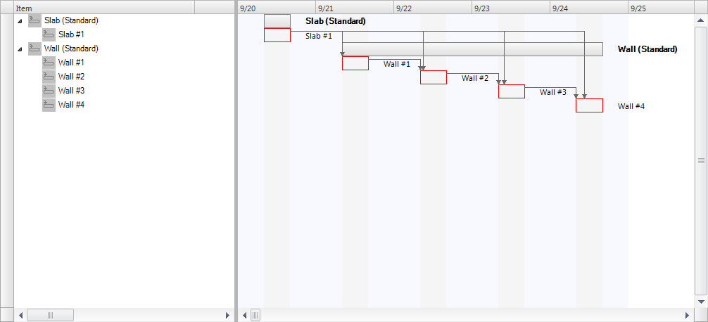
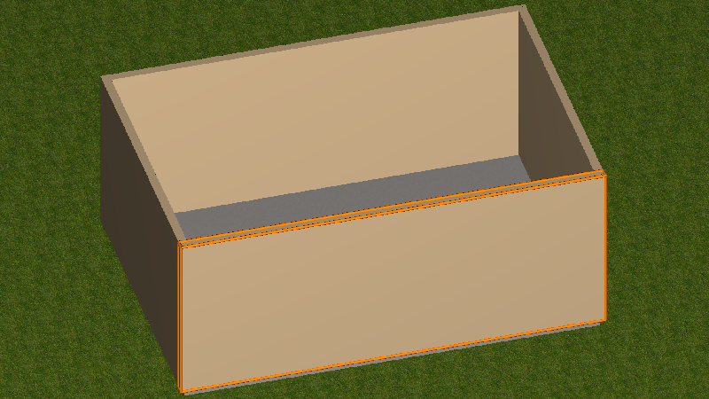

Figure E27 — Task assignment graph
The focus point of this example is linking building elements to the task of a construction schedule to enable construction scheduling.
The example includes a hierarchy of tasks assigned to building elements. One task is assigned to pour a concrete slab, and four tasks are assigned to construct respective walls. The tasks are sequenced, where the walls are constructed in serial, following completion of the slab. The walls are nested into summary tasks for the slab and walls.
The slabs and walls in the example have a local placement, a body shape representation, and a material assignment.
The Figure E25 shows a GANTT chart representing the tasks of the construction schedule.
 |
|
Figure E25 — Task occurrences
|
The project consists of a site aggregating a building which aggregates a building storey. The building storey contains a slab and four walls, each physically connected using IfcRelConnectsElements where the RelatingElement anchors the RelatedElement. The slab and walls have standard shape that is expressed parametrically using ifcMaterialLayerSetUsage and IfcExtrudedAreaSolid geometry. Therefore the slab and the walls are expressed as IfcSlabStandardCase and IfcWallStandardCase. See Figure E26 for the geometric representation of the construction elements assigned to the tasks of the construction schedule.
 |
|
Figure E26 — Task products
|
Each task is assigned to a resulting product produced by the task using the IfcRelAssignsToProduct relationship. The root task and the construction tasks form a hierachical task - subtask relationship provided by IfcRelNests. The time related information (start time, end time) is added to each IfcTask by IfcTaskTime. See Figure E27 for an instantiation diagram.
|
|
|
Figure E27 — Task assignment graph |
 Link to this page
Link to this page